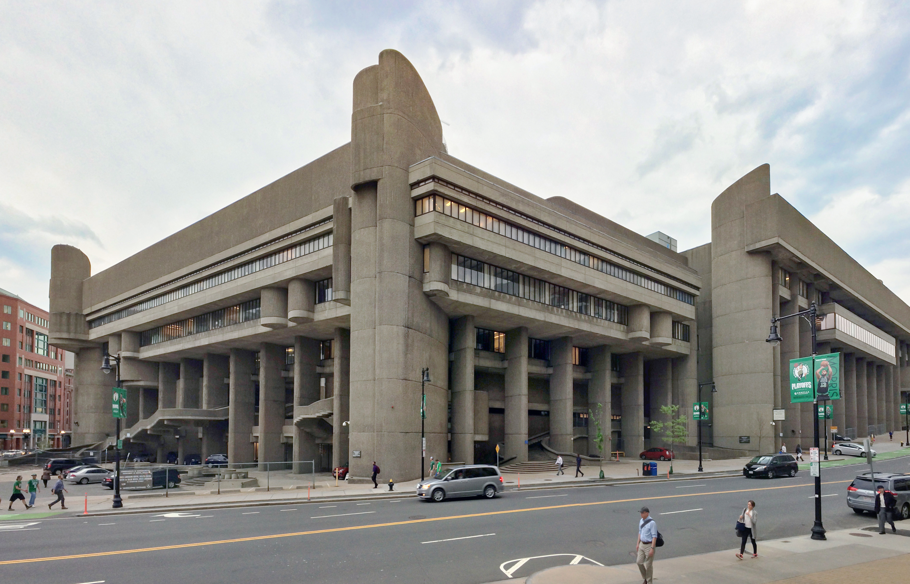

Should this be saved?
Project: Government Service Center
Location: Boston, MA
NEXT
SUBMIT

Responses
Yes
Spencer on Decemeber 2, 2022
It represents a time frame where this architectural style was in use or thought to be futuristic
Cheryl on Decemeber 2, 2022
Yes, it should be saved. Engineering and craftsmanship is invaluable.
James on Decemeber 2, 2022
Its a nice structure and very large. It could be used for something else instead of being torn down.
Angela on Decemeber 2, 2022
Yes. Architecture is art. It, like other forms of art, captures and tells human history. Place, time, circumstance, etc... All that is wrapped up in buildings like this one.
Brad on Decemeber 2, 2022
Yes, because there is a lot of good history within the building.
Kirk on Decemeber 2, 2022
Yes. It is a style in architecture that is slowly disappearing from our urban fabric.
Parvati on Decemeber 2, 2022
I am not familiar enough with the structure to say yes or no. I’ve never heard of this.
Jade on Decemeber 2, 2022
Yes if the building can be used for another purpose with renovations made on the inside to accommodate whatever new purpose the building will serve.
Robin on Decemeber 3, 2022
Yes, the Boston government service center should be saved, if the structure is secure and provides a function for the community.
Jeff on Decemeber 3, 2022
Nope, looks ugly.
Nick on Decemeber 3, 2022
Close